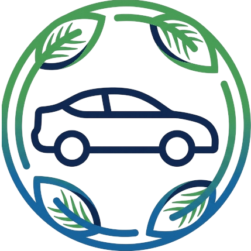

Kishor Pradushan & Bima Centerसरकार द्वारा अधिकृत प्रदूषण जांच और विश्वसनीय वाहन बीमा केंद्र। एक ही छत के नीचे अपनी गाड़ी के सभी ज़रूरी दस्तावेज़ पाएं।
सभी प्रकार के दोपहिया, चार पहिया और वाणिज्यिक (Commercial) वाहनों के लिए फ़र्स्ट पार्टी (Comprehensive) और थर्ड पार्टी (Third-Party) बीमा की तुरंत सुविधा।
सभी कंपनियों और मॉडलों के पेट्रोल स्कूटर और मोटरसाइकिलों के लिए तेज़ और सटीक प्रदूषण (PUC) जांच।
सभी प्रकार की पेट्रोल और डीजल कारों तथा हल्के परिवहन वाहनों के लिए सरकार द्वारा अधिकृत सटीक प्रदूषण (PUC) जांच।
स्थान: H.No 321 Mahuli, Road, Patti, Uttar Pradesh 230403
काम के घंटे: सोमवार - रविवार, सुबह 8:00 बजे - रात 8:00 बजे
फ़ोन: +91 94152 29504
सरकार द्वारा प्रमाणित प्रदूषण जांच ✓ तुरंत बीमा पॉलिसी ✓